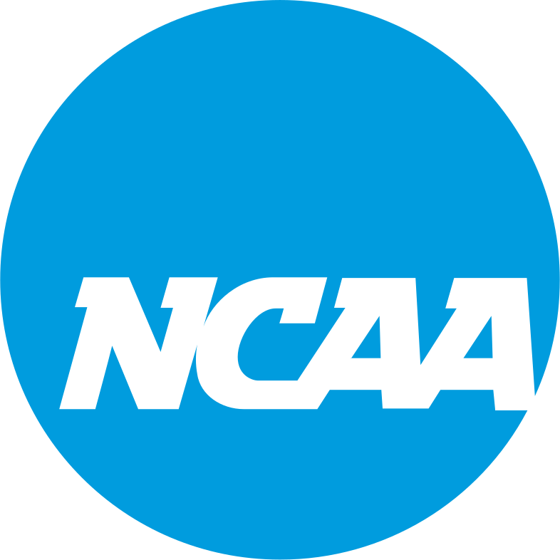
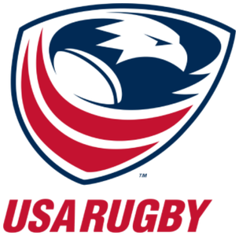
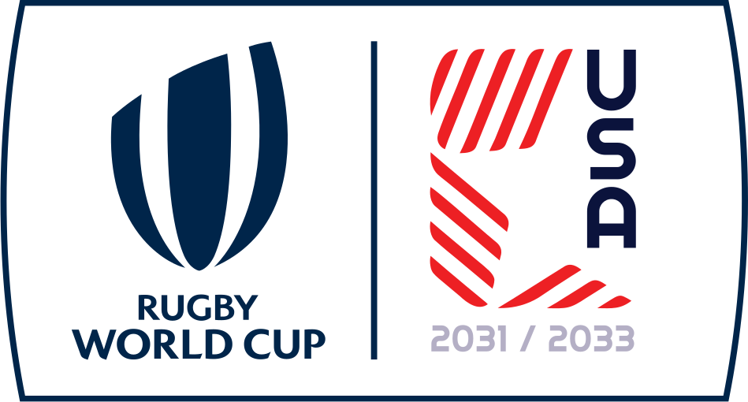

A Proposal to Sanction Rugby as a Varsity Sport.
Bringing Varsity Rugby to Montana High Schools
Montana is ready for varsity rugby, a two-year sanctioning pilot to bring the state's fastest-growing sport to high schools, beginning Spring 2028.
Get Involved
The Ask
We're asking the MHSA to approve a two-year sanctioning pilot for high school rugby, beginning Spring 2028, starting with a joint exploratory committee, then finalized safety standards, then confirmed participating schools ahead of launch.
Rugby 101
What Is Rugby?
A quick look at how the game works and why it is such a natural fit for Montana high schools.
About the Initiative
Why the Pilot Will Work
Cost
A 7-on-7 format means a smaller roster, shorter season, and multi-game tournament days, keeping costs low for schools.
Barriers to Entry
Rugby uses existing fields like football, soccer, or lacrosse, minimal equipment, and welcomes all shapes and sizes.
Demand
Montana athletes already want to play and represent their school, with over 1,100 current registrations.
Support
Backed by USA Rugby and World Rugby, with governance, standards, insurance, and support.
National Momentum
A Sport on the Rise

The NCAA recognizes women's rugby as an Emerging Sport, giving Montana's girls' programs a real path to college competition.

More than 50 colleges field varsity men's rugby programs under USA Rugby, opening the same college pathway for Montana's boys' programs.

Rugby Sevens has been an Olympic sport since 2016, and in 2024, USA women's won bronze.

The Rugby World Cup comes to the United States in 2031, putting the sport in front of its biggest American audience yet.
Our Founding Partner
Montana Institute of Sport Support
The Montana Institute of Sport is a proud supporter of the Varsity Rugby Initiative. To remove the financial barrier for schools, the Institute will fund the full program cost for every participating school through the first three seasons, so districts can launch varsity rugby at no cost and no financial risk. Learn more at montanainstituteofsport.org.
Already Underway
A Foundation Already in Place
Rugby is not starting from zero in Montana. 8 active programs, 200 certified coaches, 50+ certified referees, and 1,100 player registrations are already in place statewide, a ready-made foundation for a varsity pathway from day one.
Hover or tap a city to see its ~50-mile reach.
Easy to Start
How Easy It Is to Play
Montana's schools are already equipped for this. Rugby asks less than almost any other varsity sport, a fraction of the cost, with no new facility required, and a spring season lets it share football and soccer fields without competing for space or athletes in the fall and winter.
What Rugby Needs
- Any existing field — football, soccer, or lacrosse
- A certified coach and a referee
- Rugby ball, uniform, and mouthguard
- Cleats (soccer or football)
What It Doesn't
- No helmets or pads
- No dedicated stadium
- No major capital outlay
Program Details
How the Pilot Would Work
Format
A multi-game tournament spring season of 7-on-7 to start, with the ability to scale to 15-on-15.
Governance
Sanctioned by MHSA and administered to USA Rugby and World Rugby standards, with national-body insurance.
Coaching & Safety
All coaches USA Rugby–certified, background-checked and screened, and SafeSport compliant, with mandatory concussion and safe-contact training.
Participation
Open to all school classifications, with separate boys' and girls' divisions.
Proposed Timeline
A Measured, Reversible Path
- 2026–27 Board approval & joint exploratory committee
- 2027–28 Coach certification & school onboarding
- Spring 2028 Pilot Year 1 launches
- 2029–30 Pilot Year 2 & data collection
- 2030 Review & full-sanctioning decision
Current National Reach
Youth & High School Rugby, U.S.
Source: USA Rugby high school program data, 2011 & 2023–24 (12% YoY growth reported for '23–24).
Great Northwest Challenge, Bozeman, MT
Source: 2026 tournament coverage, KBZK News.
The Montana Varsity Rugby Initiative proposes a two-year sanctioning pilot with the Montana High School Association, bringing sanctioned rugby to Montana high schools starting Spring 2028. Montana is the fastest-growing rugby state in the country, with the coaches, clubs, and athletes already in place to compete.
Frequently Asked Questions
Is rugby safe for high school athletes?
All coaches are USA Rugby–certified and required to complete concussion and safe-contact training before stepping on the field. Rugby's tackling technique is taught from the first practice under USA Rugby's national coaching standards, the same certification used by 50+ college programs nationwide.
Will girls have the same opportunity to play as boys?
Yes. The pilot is structured with separate girls' and boys' divisions from day one, mirroring the collegiate pathway, where the NCAA recognizes women's rugby as an Emerging Sport and men's programs compete under USA Rugby.
Who pays for equipment, insurance, and facilities?
Very little is asked of schools. Rugby uses existing fields like soccer, lacrosse, or football, needs no helmets, pads, or dedicated stadium, and players are covered under USA Rugby's national insurance program. No new construction or major capital outlay is required.
Where do the coaches come from?
Montana already has more than 200 USA Rugby–certified coaches active across the state's 8 existing programs, the same coaching pipeline that would support a varsity pathway from day one. Every coach working with a sanctioned team carries USA Rugby certification, including concussion and safe-contact training, before stepping on the field.
What teams will we play?
Each tournament day is a single day of multiple games, not a traditional home-and-away schedule. Your team plays multiple other Montana schools in one day at a rotating host location, the same format used at each of the 4 regular-season tournament days.
What will this cost schools?
The single biggest cost is travel, simply due to Montana's size and the distances between schools. The full breakdown comes to under $5,000 per year, per school, see the estimated program cost above for the complete line-item detail.
How will travel work?
Teams travel by bus between the 4 regular-season tournament days. The full travel cost basis, bus rate, hours, and trip count, is in the cost breakdown above.
How many coaches will there be?
Each program is expected to have 1 head coach and 1 assistant coach.
What classifications will compete?
That depends on which schools choose to join in the first year. It may be a mixed-classification sport with Class AA, A, B, and C schools competing against each other, with the ability to move to designated classes in the future as participation scales.
How long does the season run, from first practice to the State Championship?
Rugby is a spring sport. The season runs from preseason practices through the 4 regular-season tournament days and concludes with the State Championship.
Is there a playoff structure, or does the State Championship serve as the postseason?
There are no playoffs in the first year. The State Championship itself serves as the season's postseason and culminating event.